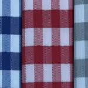
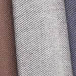
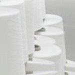

İLETİŞİM
ÜRÜNLER
Gömleklik Kumaş
Poliviskon Kumaş
Pamuklu Kumaş
HAKKIMIZDA
ANASAYFA
GÖMLEKLİK KUMAŞLAR
6-6 Kareli Pitikare Pötikare
Dacron/Dakron Kumaş
Desenli Gömleklik Kumaş
POLİVİSKON KUMAŞLAR
En Boy Poliviskon Gabardin
Poliviskon Kaşe
PAMUKLU KUMAŞLAR
16 / 12 PAMUK GABARDİN
40/1 80 tel-poplin
En Boy Poliviskon Gabardin Kumaş
Siyah
Gri
Siyah Gri